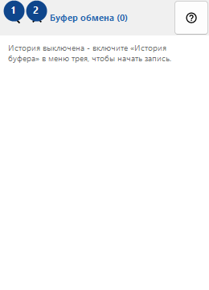
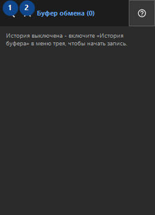

Буфер обмена
Для чего это окно
История хранится только локально и шифруется Windows DPAPI для вашей учётной записи.


Порядок действий
Прочитайте пояснения к номерам, выберите нужные значения и продолжите командой окна.
Элементы
1. Поиск по истории
Используйте команду, когда нужно указанное действие. Прочитайте запрос подтверждения перед согласием.
Ваши сочетания клавиш2. Закрыть
Используйте команду, когда нужно указанное действие. Прочитайте запрос подтверждения перед согласием.
Ваши сочетания клавиш